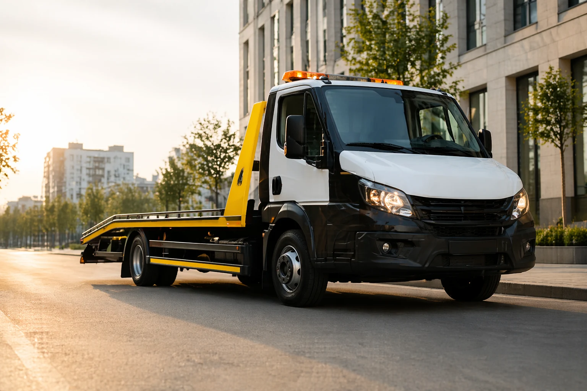
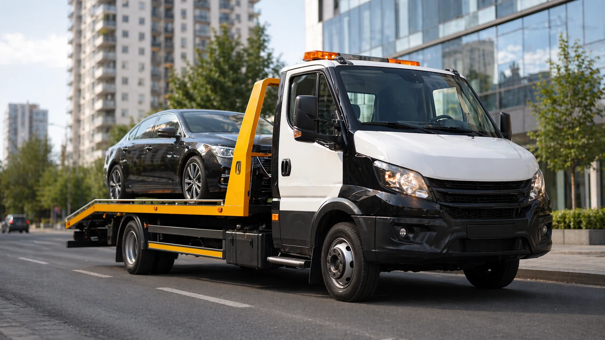
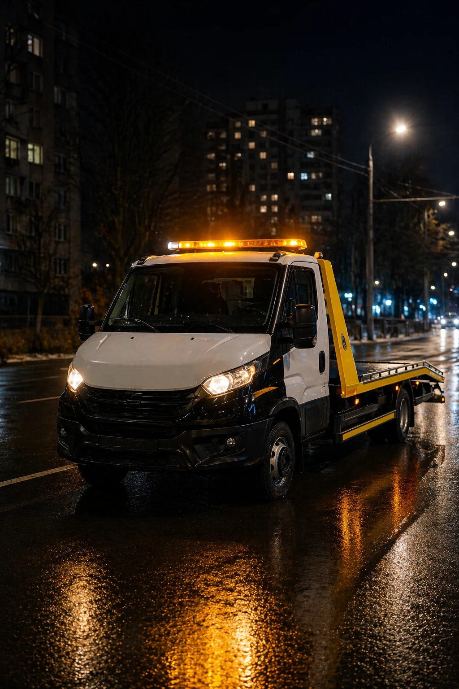
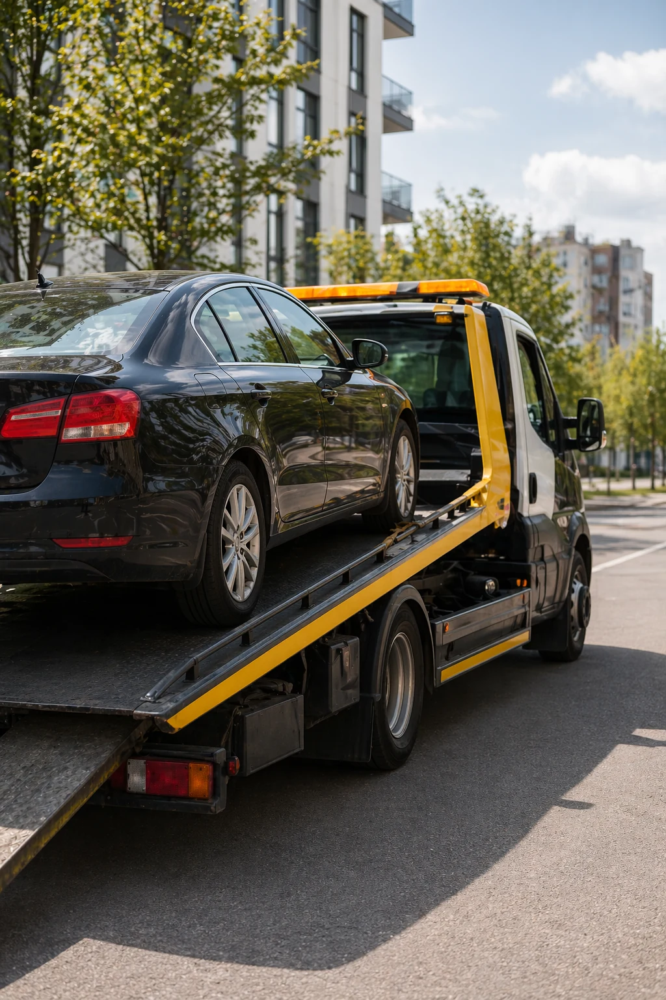

Работаем круглосуточно без выходных
Круглосуточная помощь на дороге
Эвакуатор в Донецке 24/7
Быстро приедем, аккуратно погрузим и доставим автомобиль. Работаем по Донецку, районам города и по ДНР.
- Срочный выезд по городу и ближайшим направлениям
- Погрузка легковых авто, кроссоверов и внедорожников
- Честная стоимость без лишних обещаний
Если нужен эвакуатор в Донецке, срочный выезд после поломки или помощь на дороге после ДТП, достаточно одного звонка. Мы работаем как эвакуатор 24/7 в Донецке и аккуратно перевозим автомобили по городу и по ДНР.
Круглосуточно
Диспетчер всегда на связи

Позвонить
ЭВАКУАТОР ДОНЕЦК 24/7
БЫСТРЫЙ ВЫЕЗД
ПОЗВОНИТЬ: +7 (949) 4-999-109 / +7 (949) 499-94-45
ПОМОЩЬ НА ДОРОГЕ
Связь напрямую с диспетчером, без формы заявки
От перевозки авто до помощи на дороге
Выезд по городу, районам и ближайшим направлениям
Почему выбирают нас
Служба эвакуации, заточенная под быстрый звонок и понятный выезд
Когда нужен вызов эвакуатора в Донецке, важнее всего скорость реакции, аккуратная погрузка и понятная коммуникация. Мы сделали сервис максимально прямым: звонок, уточнение адреса и выезд.
24
Работаем круглосуточно
Эвакуатор по Донецку и ДНР доступен днём, ночью, в выходные и праздники.
01
Быстрый выезд
Диспетчер сразу принимает звонок, уточняет адрес и направляет ближайшую технику.
02
Аккуратная погрузка
Работаем бережно с исправными и повреждёнными автомобилями, в том числе после ДТП.
03
Честная стоимость
Стоимость эвакуатора в Донецке озвучиваем по телефону до выезда, без лишних сюрпризов.
Услуги
Услуги эвакуатора в Донецке и по ДНР
Вызвать эвакуатор в Донецке можно для обычной перевозки автомобиля, срочной помощи на дороге или аккуратной эвакуации после ДТП.
Листайте карточки по горизонтали
Эвакуация легковых авто
Забираем автомобиль с улицы, двора, парковки или трассы и безопасно доставляем в нужную точку.
ПозвонитьЭвакуация внедорожников
Работаем с кроссоверами и более тяжёлыми автомобилями, подбирая подходящий способ погрузки.
ПозвонитьПеревозка автомобилей
Поможем перевезти авто по Донецку, районам города и по направлениям ДНР без лишней суеты.
ПозвонитьПеревозка спецтехники
Перевозим мини-погрузчики, квадроциклы, коммунальную и другую малую спецтехнику по Донецку и ДНР.
ПозвонитьЭвакуация после ДТП
Выезжаем аккуратно, без лишней спешки, чтобы безопасно погрузить и доставить повреждённый автомобиль.
ПозвонитьКак это работает
Простой сценарий без лишних шагов
Главная цель сайта и сервиса одна: чтобы вы быстро связались с диспетчером и получили эвакуатор без онлайн-форм и ожидания ответа.
01
Вы звоните
Нажимаете кнопку и сразу связываетесь с нами по телефону.
02
Мы уточняем адрес
Уточняем район Донецка, состояние автомобиля и точку доставки.
03
Эвакуатор выезжает
Направляем технику и держим связь по маршруту.
04
Автомобиль доставляется
Аккуратно грузим и перевозим машину по согласованному адресу.
География
Работаем по Донецку, районам города и по ДНР
Нужен эвакуатор круглосуточно в Донецке или срочный выезд по району? Принимаем звонки по городу и по направлениям ДНР.
Выезжаем по всему Донецку, в районы города и по направлениям ДНР. По телефону сразу согласуем адрес, ориентир и подходящий формат эвакуации.
Позвонить диспетчеруЕсли карта не отображается, откройте её в Яндекс Картах по кнопке «Открыть».
Фото техники
Техника готова к выезду в любое время
В этом блоке используем фото техники в реалистичной подаче. Кадры помогают сразу считать характер сервиса: аккуратно, современно и по делу.

Выезд по Донецку без лишней бюрократии
24/7
Одно нажатие на кнопку звонка и диспетчер уже в работе.

Работаем ночью
Круглосуточный эвакуатор в Донецке без выходных.

Аккуратная погрузка
Бережно работаем с автомобилями после поломки и ДТП.
Полезные разделы
Отдельные страницы под частые запросы
Подготовили дополнительные страницы под популярные запросы: вызвать эвакуатор в Донецке, выезд по ДНР, перевозка спецтехники и эвакуация после ДТП.
FAQ
Частые вопросы
Ниже короткие ответы на то, что чаще всего спрашивают, когда нужен срочный эвакуатор в Донецке.
Сколько стоит эвакуатор в Донецке?
Цена зависит от адреса, расстояния, типа автомобиля и сложности погрузки. Мы не прячем стоимость: после короткого звонка называем ориентир до выезда.
Как быстро приезжает эвакуатор?
После звонка уточняем точку в Донецке или по ДНР и направляем ближайшую свободную технику. Наша задача — выехать настолько быстро, насколько это позволяет дорожная ситуация.
Работаете ли вы ночью?
Да, эвакуатор в Донецке работает круглосуточно. Принимаем звонки 24/7 и выезжаем ночью, утром, днём и вечером.
Можно ли вызвать эвакуатор после ДТП?
Да, выезжаем после ДТП, аккуратно грузим повреждённый автомобиль и доставляем его на стоянку, в сервис или по другому согласованному адресу.
Срочный выезд 24/7
Нужен эвакуатор в Донецке? Позвоните сейчас
Если нужен недорогой эвакуатор в Донецке, перевозка автомобиля по ДНР или помощь на дороге в любое время суток, звоните напрямую диспетчеру.